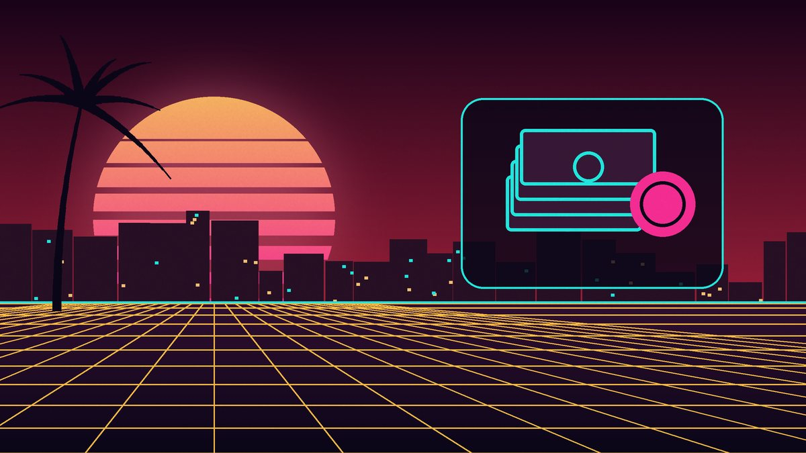

Puedes arrancar un cajero de la pared y llevártelo con una camioneta
No hace falta esperar a que la historia te enseñe a robar cajeros: con un gancho de remolque montado en el taller puedes arrancarlos mucho antes.
Por Redacción Golpe Diario · Publicado el · Actualizado el

Qué ha pasado
La historia de GTA 6 no presenta el robo de cajeros hasta bastante avanzada la partida, pero la guía de Gamers Heroes explica que se puede hacer mucho antes. Solo necesitas un vehículo propio con caja abierta detrás. Todavía no se sabe la lista exacta de modelos que valen, aunque según esa guía las camionetas básicas deberían servir. PPE.pl, un medio polaco, calcula que la mecánica está del todo disponible hacia el capítulo 3, pero lo plantea como una estimación suya y no como un dato de Rockstar.
El gancho se monta en cualquier Mod Shop: entra en Bodywork, luego en Towing y elige The Winch, el cabrestante que añade el gancho de remolque en la parte trasera. Ninguna de las guías consultadas da el precio, así que mira lo que cuesta en el propio taller antes de aceptar. PPE.pl apunta otra vía: coger un vehículo de trabajo que ya lleve gancho, como una pequeña grúa, o un coche aparcado que lo traiga de serie.
Con el gancho puesto, da marcha atrás contra el cajero hasta que se enganche y acelera hasta arrancarlo de la pared. No todos ceden. Según el análisis de Shacknews, en el juego hay 454 cajeros y 168 se pueden enganchar a una grúa y llevárselos, algo más de un tercio del total. Si uno no responde, pasa a otro.
Arrancarlo no te da el dinero al instante. PPE.pl explica que hay que arrastrar el cajero por la carretera hasta que el roce con el asfalto dañe su carcasa reforzada y salgan las cajas de billetes; en otra guía añade que esas cajas se abren a tiros con una pistola o con explosivos. Gamers Heroes resume las dos salidas: reventarlo con una carga explosiva o seguir arrastrándolo con el vehículo hasta que se rompa.
El riesgo es la policía. Según PPE.pl, pasear por la calle un cajero que suelta chispas, a plena luz del día, llama la atención enseguida, así que conviene abrir las cajas con una vía de escape pensada de antemano. El medio llega a sugerir cambiar el coche dañado por un barco en un puerto cercano. Además, los billetes salen marcados y hay que cambiarlos: Beebom señala Brian's Lockup para convertir el dinero marcado y la mercancía ilegal. Ninguna de las fuentes da cifras de lo que paga cada cajero.
Qué significa para ti
- Antes de ir al taller, decide el vehículo: tiene que ser tuyo y llevar caja abierta detrás, o uno de trabajo que ya traiga gancho. Las camionetas básicas son la apuesta más segura.
- Monta el gancho en un Mod Shop (Bodywork, luego Towing) y mira el precio antes de confirmar: las guías no lo dan.
- No todos los cajeros sirven: solo 168 de 454, según Shacknews. Si uno no engancha, busca otro en vez de insistir.
- Arrastra el cajero hasta que se rompa la carcasa y abre las cajas. Ten el plan de huida listo antes de empezar, porque la policía aparece rápido.
- El dinero sale marcado: cámbialo en Brian's Lockup, según Beebom, y no cuentes con él hasta entonces.
Lo tienes también en la guía: Cómo ganar dinero en GTA 6
Contrastado con: Gamers Heroes · PPE.pl · PPE.pl · Beebom · Shacknews
Sigue leyendo
El almacén al este de Hamlet: unos 13.000 dólares y tres armas sin pegar un tiro
Es una nave de South Vice-Dale County, a las afueras de Hamlet, y cuando llegas los que la guardaban ya están muertos. Hay una bolsa con 6.000 dólares en billetes marcados, paquetes de cocaína, tres armas y una carta de coleccionista que en la casa de empeños paga otros 6.000.
Cómo ganar dinero rápido en las primeras horas de GTA 6: lo que de verdad paga
Los medios que ya han jugado coinciden en que asaltar las operaciones ilegales del mapa paga mucho mejor que robar coches en los capítulos 1 y 2. Esta es la lista de métodos, lo que pagan según cada fuente y lo que hay que desbloquear antes.
Si te matan o te detienen pierdes todo el dinero que llevas encima: así se salva
En GTA 6 el dinero vive en dos sitios: el del bolsillo y el de la cuenta del banco. Lo avisó el propio Rob Nelson, de Rockstar, antes del estreno: sin ingresarlo, ese efectivo desaparece en cuanto caes.